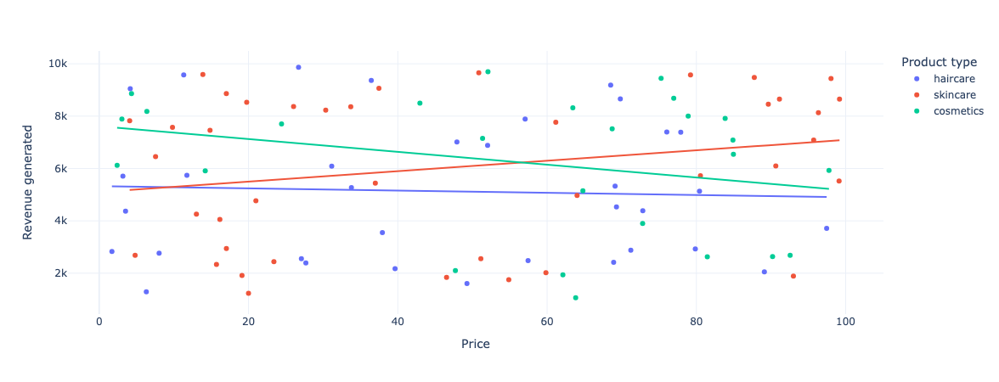
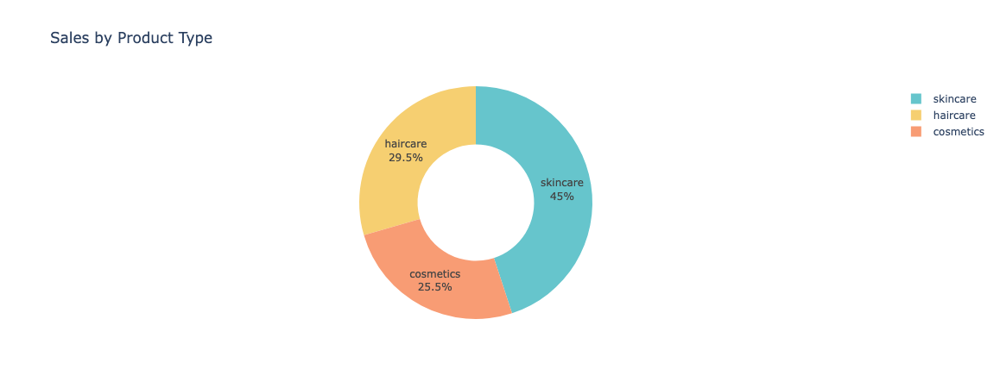
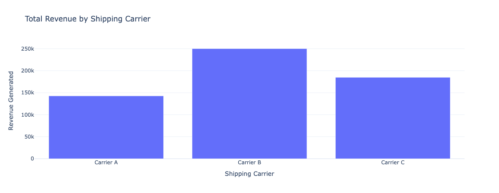

This report presents an analysis of supply chain data using Python and various data visualization libraries.
The analysis was conducted using pandas for data manipulation and Plotly for interactive visualizations. The supply chain dataset was used as the primary source of information.
A scatter plot was created to visualize the relationship between price and revenue generated, color-coded by product type.
A pie chart illustrates the distribution of sales across different product types.
A bar chart shows the total revenue generated by each shipping carrier.
Line and bar charts display revenue generated, stock levels, and order quantities for each SKU.
A bar chart shows shipping costs by carrier, and a pie chart illustrates cost distribution by transportation mode.
Bar and pie charts visualize average defect rates by product type and transportation mode.
View code on GitHub.
I welcome professional connections and discussions about this project or related topics. Feel free to connect with me on LinkedIn.
To learn more about my other projects and professional background, you can visit my personal website.